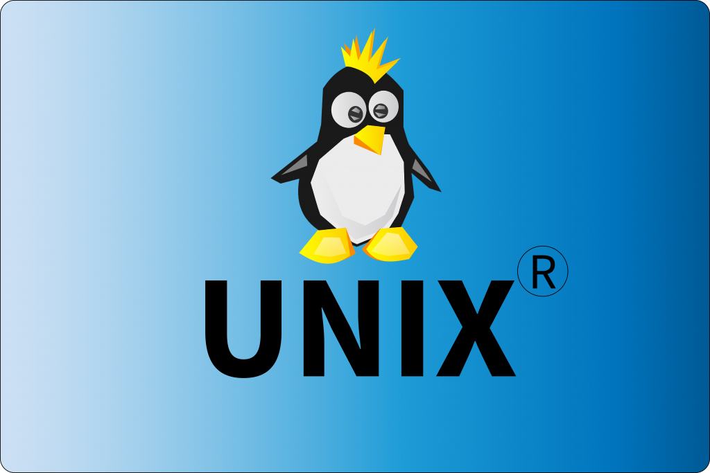

Linux
A Linux az ingyenes és a nyílt forráskódú szoftverek egyik legismertebb példája. A név a Linus Torvalds által 1991-ben kifejlesztett Linux Kernel rövidítése. A köznyelvben leginkább a teljes Unix-szerű operációs rendszerre utalnak vele, amely a Linux-rendszermagra és az 1983-ban, Richard Matthew Stallman vezetésével indult GNU projekt keretében született alapprogramokra épül. A Linux pontosabb neve GNU/Linux.
A „Linux" kifejezést használják Linux-disztribúciókra (terjesztések) is, ám ilyenkor a disztribúció nevét is hozzáteszik. A disztribúció olyan összeállítás, amely az alaprendszeren túl bizonyos szempontok alapján testre szabott és összeválogatott programokat tartalmaz.
A Linux a szerverek és pc-k mellett megtalálható sok összetett elektronikus eszközben, mint például hálózati eszközökben, hordozható eszközökben, háztartási gépekben, szórakoztató elektronikai berendezésekben is. Bizonyos területeken (pl. webszerverek esetében) a legmeghatározóbb operációs rendszernek számít. Az utóbbi években személyi számítógépekre (asztali és hordozható gépek) is egyre többször telepítenek Linux disztribúciót.
Története
- A GNU projekt(1983): Világszerte sok programozónak szimpatikus volt a Richard M. Stallman által indított GNU Projekt. A megmozdulás célja a szabadon felhasználható, minőségi szoftvereket készítése és terjesztése.
- Az 1980-as évek PC-s operációs rendszerei: A 80-as évek elejétől az egyik meghatározó PC-s operációs rendszer a DOS volt. Az akkori Apple Macintosh gépek jobbak voltak az IBM PC-knél, de magasabb áruk és a perifériák alacsony választéka meggátolta őket a szélesebb körű elterjedésben. 
- A UNIX operációs rendszer: A 80-as években használtak egy másik operációs rendszert, a Unix-ot. Jó tulajdonságokkal rendelkezett, de leginkább az intézmények, kutatási központok, iskolák operációs rendszere volt, részben az ára miatt, részben mert eredetileg sem otthoni felhasználásra, hanem nagyszámítógépekre tervezték.
- A MINIX operációs rendszer: A szakemberek megpróbálták a UNIX előnyeit átültetni az olcsóbb PC-re. Egyik ilyen próbálkozás Andrew S. Tanenbaum professzor MINIX-e volt 1987-ben. A MINIX készítője nem egy meglevő operációs rendszert használt fel alapjául. A rendszert oktatási céllal írta, Tanenbaum azt szerette volna, ha tanítványai ezen a MINIX-en tanulják meg az operációs rendszerek működésének, felépítésének alapjait. Nem volt kimagaslóan jó operációs rendszer, de vitathatatlan előnye, hogy nyílt volt a forráskódja.
A Linux születése:
Linus a Helsinki Egyetem számítástechnikai tudományok karának másodéves hallgatója volt 1991-ben. Linus saját operációs rendszert szeretett volna írni, mivel a GNU Hurd-re várhatóan néhány évet várni kellett volna. Egy 1991. július 3-án írt e-mail szerint már a POSIX szabvány után érdeklődött az interneten, így ekkor már futhatott nála egy kezdetleges rendszer. A program fejlesztése a Tanenbaum-féle Minix alatt történt, eleinte assembly nyelven. Linus levele számos programozót inspirált.
„GNU/Linux":
A „Linux" valójában csupán a kernel (rendszermag) neve. A Linux kernelen alapuló rendszerekszinte minden esetben a GNU projekt által fejlesztett alapprogramokat használják (pl. az operációs rendszer alapkönyvtára, az alapvető Unix/Linux programok). A Linux operációs rendszer tehát leggyakrabban a Linux kernelből, valamint a GNU rendszerkönyvtárakból és rendszerprogramokból áll. Stallman szerint ezért az operációs rendszer helyes elnevezése „GNU/Linux operációs rendszer".
Jogi kérdések:
A legtöbb GNU szoftver a GNU General Public License (GPL) licenc alatt jelenik meg maga a Linux kernel is. A GPL kötelezi a Linux disztribúciót árusítókat, hogy a Linux kernel forráskódját elérhetővé tegye, hogy így bárki megtekinthesse, tovább módosíthassa, és ugyanolyan feltételekkel továbbadhassa.
A Linux más fő összetevői más licenceket is használnak. Sok könyvtár a GNU Lesser General Public License (LGPL) licencet használja, az X Windows System rendszer pedig a MIT licencet használja.
Érdekesség: az SCO csoport, a UNIX legfőbb jogtulajdonosa nagy összegű jogi támadásba kezdett a Linuxot támogató IBM ellen 2003 márciusába., Arra hivatkoztak, hogy a Linux kernel egyes verzióinak forráskódjában UNIX-ból származó kódok és megoldások találhatók. Valamint közel 1500 Linuxot használó vállalatot figyelmeztetett a jogdíjak elmaradására. Nem sokkal később a Novell beperelte az SCO-t, hogy a UNIX és UnixWare jogok az ő tulajdonukban vannak. Aperben 2007. augusztus 10-én Dale Kimball szövetségi bíró hozott ítélete szerint a jogtulajdonos egyértelműen a Novell. Ezzel az ítélettel az SCO IBM elleni pere a jogalapját vesztette. A per egyik eredménye az Open Source Risk Management (OSRM) megalakulása, amely a nyílt forráskódú fejlesztők és végfelhasználók szervezett jogi védelmének ellátására jött létre.
A Linux védjegy:
Az USA-ban a Linux lajstromozott védjegy. 1994. augusztus 15-én William R. Della Croce Jr. jelentette be a Linux megjelölést a saját neve alatt védjegyként való lajstromozásra az USPTO-nál. Ezután jogdíj fizetését követelte a Linux disztribúciók fejlesztőitől.
A Linux kernel:
A Linux kernel a Linux operációs rendszer magja. Unix-szerű, monolitikus kernel, melyet Linus Torvalds informatikus alkotott meg 1991-ben, azóta egy csoport fejleszti a világ minden tájáról. Eredetileg az Intel 386-os processzorára fejlesztette, hogy tanulmányozhassa az akkoriban újdonságnak számító 386 védett üzemmódját, de később számos más architektúrára is kiterjesztették. A legtöbb támogatott architektúra 32 és 64 bites változata is natívan támogatott. Alapvetően C nyelven íródott. Forráskódja szabad szoftver, jelenleg GNU GPL v2 licenc alatt adják ki.
Fejlesztés:
A legfontosabb különbség a Linux és más népszerű operációs rendszerek között az, hogy a Linux kernel és a komponensek ingyenesek és nyílt forrásúak. A Linux nem az egyetlen, de a legismertebb és legszélesebb körben használt operációs rendszer. Számos szabad- és nyílt forrású szoftver licencelése a copyleft licencen alapul. Itt a jog adta eszközöket nem az adott szellemi termék terjesztésének gátlására, hanem a megkötések kiküszöbölésére használják fel. Ezzel garantálva a felhasználás szabadságát a módosított változatokra nézve is. A legismertebb szabad szoftver licenc a GNU GPL, amely egy copyleft licenc.
Linux disztribúciók:
Egy disztribúció adott készítőtől vagy gyártótól származó összeállítás, amely egy GNU/Linux alaprendszert, és ahhoz tartozó, bizonyos szempontok (a célközönség, a felhasználás célja, a célgép hardverkonfigurációja, kezelhetőség, biztonság) szerint válogatott és testre szabott programokat tartalmaz. Nem biztos, hogy ha egy program működik az egyiken, akkor működni fog a másikon is. Ennek oka, hogy a különböző disztribúciók részben különböző bináris formátumokat, indexelést használnak. Különböző standardokkal (Linux Standard Base, Filesystem Hierarchy Standard) igyekeznek segíteni ezen.
- Nemzetközi fejlesztésű disztribúciók: Arch Linux, Red Hat Linux, CentOS, Kali Linux, Linux Mint, Ubuntu, Kubuntu, Lubuntu, Xubuntu, Ubuntu MATE, Zorin
- Magyar fejlesztésű disztribúciók:
- Aktív: BeLin (Beszélő Linux), Digitális Jólét Szoftver Alapcsomag
- Inaktív: Andromeda Linux, Kiwi, SuliX, UHU-Linux
Programozás Linux alatt
A legtöbb Linux disztribúció több
programnyelvet támogat. A Linux alá írt alkalmazásokhoz és magához az operációs rendszerhez való eszközök mind megtalálhatóak a GNU toolchain összeállításban. A legtöbb disztribúció emellett PHP, Perl, Ruby, Python és egyéb dinamikus nyelveket is támogatnak. Számos Java virtuális gép és fejlesztői eszköz fut Linuxon.
Használata
Vannak általános célokat kielégítő és speciális területekre összpontosító Linux disztribúciók, (pl. különböző számítógépes architektúrák támogatása, biztonság, adott régióhoz és nyelvhez, különböző felhasználói csoportok segítése). Továbbá vannak disztribúciók, amelyek kizárólag szabad szoftvereket használnak. A Linux kernel a legkülönfélébb számítógépes architektúrán működik. Léteznek speciális disztribúciók, melyek kisebb gépigényeknek is megfelelnek. A kernel olyan architektúrákon is képes futni, amelyekre sosem terveztek más rendszert (pl. a Macintosh gépek, videójáték-konzolok, mobiltelefonok).
Asztali felhasználás
A Linux asztali operációs rendszerként való használata az elmúlt években folyamatosan nőtt. Jelenleg a Linux disztribúciók túlnyomó többsége grafikus felületet használ. A két legelterjedtebb grafikus felület a GNOME és a KDE.
Sok alkalmazás, ami Microsoft Windows és macOS alatt elérhető, elérhető Linux alatt is. Leggyakrabban az alkalmazásoknak van egy szabad szoftveres megfelelőjük, mely funkcionalitásban és tudásban hasonló, de előfordul, hogy az adott programnak van linuxos verziója.
Sok Microsoft Windowsra és macOS-re írott program nincs még Linuxra átírva. Lemaradása van a Linuxnak az asztali kiadványszerkesztés és a professzionális hangszerkesztés területén. De szerencsére a hétköznapi felhasználó igényeit kielégítő programokban nincs hiány.
Egyre több a jogvédett és a kereskedelmi szoftver is. Animációk és vizuális effektek tekintetében az olyan magas szintű szoftverek egyaránt elérhetők Windowsra, Macre és Linuxra, képernyőfelolvasók is elérhetőek.
A szabad szoftveres közösség együttműködésének köszönhetően egyes disztribúciók olyan nyelven is megjelennek, amilyenen a kereskedelmi szoftverek nem, mivel nem éri meg nekik lefordítani.
Az elterjedését nehezíti, hogy a Linux és Linux-alapú programok kezelése sok esetben eltér a kereskedelmi rendszerek kezelésétől. Néhány program Linux alatt nem, vagy nehézkesen elérhető. ezek megoldásán dolgoznak a fejlesztők.
Szerverek és szuperszámítógépek:
Történelmileg a Linux-disztribúciókat szerver operációs rendszereknek használták. A szerverek területén elért sikeressége köszönhető legendás stabilitásának, hosszú menetidejének, és annak, hogy szerver rendszerekhez legtöbbször nem kell grafikus felület. Vállalati és nem-vállalati Linux-disztribúciókat egyaránt használnak szerverekhez. A Linux szerverként való sikere nagyban köszönhető a világ vezető webkiszolgáló szoftverének, az Apache webkiszolgálónak.
Telepítés:
Az elején a telepítés nehézkes volt, ezért nem terjedt széles körben a Linux, mivel a számítógép hardverének részletes ismeretére és szöveges terminál használatára volt hozzá szükség. Mára számos disztribúció telepítése a konkurens Windows rendszerek telepítéshez hasonlóan nagyon egyszerű.
Az elején a telepítő beállítja a számítógépünknek megfelelően a meghajtóprogramokat, a legtöbb hardvert felismeri és automatikusan használatba is veszi. Általában a telepítés befejezése után egy kész, használható rendszert kapunk, amely nem igényel további beállítást a felhasználótól.
A Linux telepítése személyi számítógépen legkönnyebben egy önállóan elindulni képes telepítő CD-ről végezhető. A telepítő CD-k letölthetőek az internetről, vagy megvásárolhatók csomagban, amelyekben mellékelik a használati utasítást és néhány extra szoftvert is.
Beállítások:
A Linux beállításai disztribúciónként különbözhetnek. Ennek ellenére általában minden szoftvernek felhasználónként különböző beállítása lehetséges, amelyeket az adott szoftver a felhasználó saját mappájába ment el. A rendszer védelme érdekében a kiemelt fontosságú és a felhasználók által is elérhető fájlok különböző helyeken vannak. Természetesen az átlagos felhasználóknak nincs joguk használni és módosítani a rendszergazda alkalmazásait.
Biztonság:
A Linux biztonsága függ a felhasználási területtől. A Linux fejlesztése a biztonságra nagyon ügyelő közönség előtt zajlott. Nagygépes rendszerekben a biztonság főként attól függ, hogy a rendszergazdák mennyire tudják kiismerni a rendszert. Speciálisan biztonságközpontú disztribúciók egész sora áll rendelkezésre.
Problémák és kritika:
Természetesen a Linux programot is érik kritikák. Leggyakrabban azért, mert nem minden hardverre alkalmas. Sok gyártó nem teszi fel az általa előállított számítógépekre. Ennek az oka, hogy a forráskódot is közzé kellene tenni a GNU General Public License alatt, ez azonban jogi kérdéseket vet fel. Linux nagyon finoman beállítható, de sok előzetes tudást és tapasztalatot igényel. A beállításokhoz sokszor nem áll rendelkezésre grafikus felület, nem segítenek könnyen megválaszolható kérdések, és segédprogramok sem könnyítik meg a feladatot.